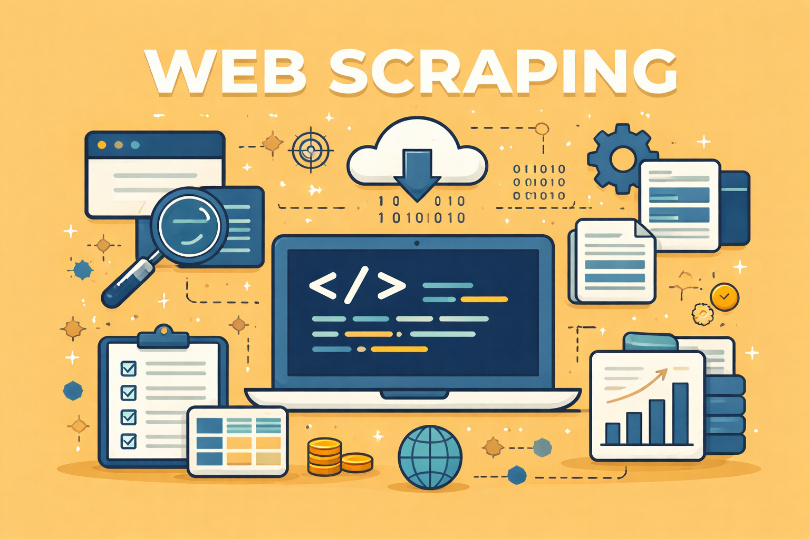

📦 Projects
Cool project to use Great Expectations. The idea is to create a data quality pipeline to validate the data from the WAP (Write-Audit-Publish) architecture.
Project
Tools: Python, Docker, Unit Tests, Airflow, SQL
Project to create a robust logging system. Logs are output in plain text and JSON format.
Project{
"level": "ERROR",
"message": "Error message",
"timestamp": "2023-12-23T15:45:01+00:00",
"logger": "my_app",
"module": "main",
"function": "main",
"line": 35,
"thread_name": "MainThread",
"exc_info": "ZeroDivisionError"
}Tools: Python, Unit Tests
Web scraping project to extract product data from a supermarket website.
Project Tools: Python, BeautifulSoup